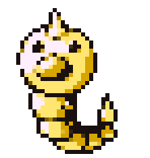

Randomic-Dex
(1º Geração)

WeedleTipo
Peso : 1kgAltura : 15cm |
Nº 13 |
Descrição |
Pokémon InsetoWeedle tem um sentido extremamente agudo de cheiro. Ele é capaz de distinguir os seus tipos favoritos de folhas daqueles que não gosta apenas por cheirar com a sua grande tromba vermelha (nariz). |
|---|